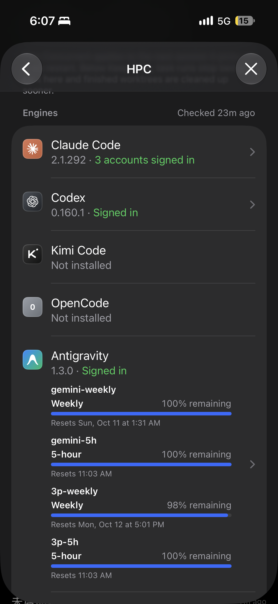

只登录一个 Google 账号时，运行器页的 Antigravity 行现在铺开四条额度，行占了小半屏。改成只挂最接近上限的那一条：有用完的先显示用完的（几条都用完时显示最晚恢复的那条），否则显示剩余最少的，一样少时取第一条——和 composer 底部额度小圆点选的是同一条（bindingRow）。四条全部留在点进去的引擎页。Codex、Claude Code 的行不变；两个以上账号时行上照旧不挂额度。

A 一个账号时四条额度全挂在行上：gemini-weekly、gemini-5h、3p-weekly、3p-5h，每条四行，一共十六行。
① 只挂一条：这台机器上最先卡住的那条。此刻四条里 3p-weekly 剩 98%、其余 100%，所以挂 3p-weekly。名字、百分比、重置时间和引擎页里那一条一字不差。② 行和 Codex 行差不多高，下面的按钮回到一屏里。
③ 四条都在：Default 账号下面按 agy 给的顺序列出全部额度，和现在一样。行上那一条只是摘要，点行就能看全。
④ 有一条快用完（剩不到 10%）：挂它，条和重置时间变橙。⑤ 有一条用完：挂它，会话要等它恢复或换账号。⑥ 四条都满：挂第一条 gemini-weekly。